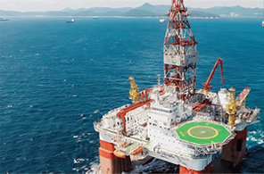

Future Strategic Industry and New Growth Industry
- Home
- Strategic Industries
- Future Strategic Industry and New Growth Industry
Overview
Busan intends to strengthen the competitiveness of the convergence industry as a new growth engine to create sustainable future. Also, it is carrying out various projects in future strategic industry areas including IT, offshore and shipbuilding, bio, robots and green energy industry.
-
 Establishment of Dongnam region radiological & medicine sciences industrial complex
Establishment of Dongnam region radiological & medicine sciences industrial complex -
 Establishment of offshore wind farm
Establishment of offshore wind farm -

World-level drill ships
Industries
Enhance the global competitiveness of the IT sector
Develop cloud/IoT industry
- Construct a cloud data center model complex (Mieum District) and distribution base (2014–2018)
- Establish a BS Financial Group’s integrated computer center (2 buildings, KRW 190.2 billion); begin construction in Aug. 2015
- Designate a cloud cluster (2015): Mieum (platform), Seokdae–Centum (service zone)
- Build a cutting-edge IoT demonstration complex (2015–2017) and an IoT test bed (2015)
- ITU post project: attracting ITU universities and establishing ITU Youth Center
Specialization of offshore and shipbuilding industry, the growth engine of Busan
Develop the shipbuilding and offshore plant industry
- Build a marine ICT convergence business belt (2016–2020)
- Establish a promotion base for the IoT convergence industry
- Construct a deep sea marine-engineering water tank, research base for advanced offshore plant technology, offshore plant equipment and materials R&D center, base for the advancement of shipbuilding equipment performance; promote the construction of offshore plant engineering cluster and shipbuilding and offshore plant global center
- Train offshore plant experts and provide safety education for offshore plant engineers
- Establish a Busan New port hinterland complex on 660,000 ㎡ of land and attract relevant enterprises (2014–2017), produce and distribute offshore plant equipment and materials, etc.
Create jobs through Busan’s own strategic projects
Build an IT convergence industrial base
- Establish a cutting-edge IT convergence industry cluster (2011–2015)
- Approve a branch establishment for attracting the Busan branch office of ETRI (Electronics and Telecommunications Research Institute) (July 2015)
Develop the radiation medical and scientific industry
- Establish a new research reactor for export (2010–2018), complete the site construction (April 2015), build a base for radioactive isotope convergence research (2015–2019)
- Establish a nuclear power facility demolition technology integrated research center (2016–2019)
- Support the medical industry, including a cancer research center and a globally leading clinical test center
- Build an antiaging industry infrastructure and support product development
Develop footwear and textile industry
- Develop the Busan’s footwear industry to become a world-class industry through the development of highly-functional shoes and verify their quality
- Predominate the global market through the promotion of marine convergence material industrialization projects
Develop the robot industry and green energy industry
- Build a marine robot research resource center (2011–2016)
- Establish robot convergence ecological environment, such as task planning, in connection with the local industry (2015)
- New renewable energy regional support project (18 places), offshore wind power complex (2013–2017)
- Construct a bio cogeneration plant (2015–2017)